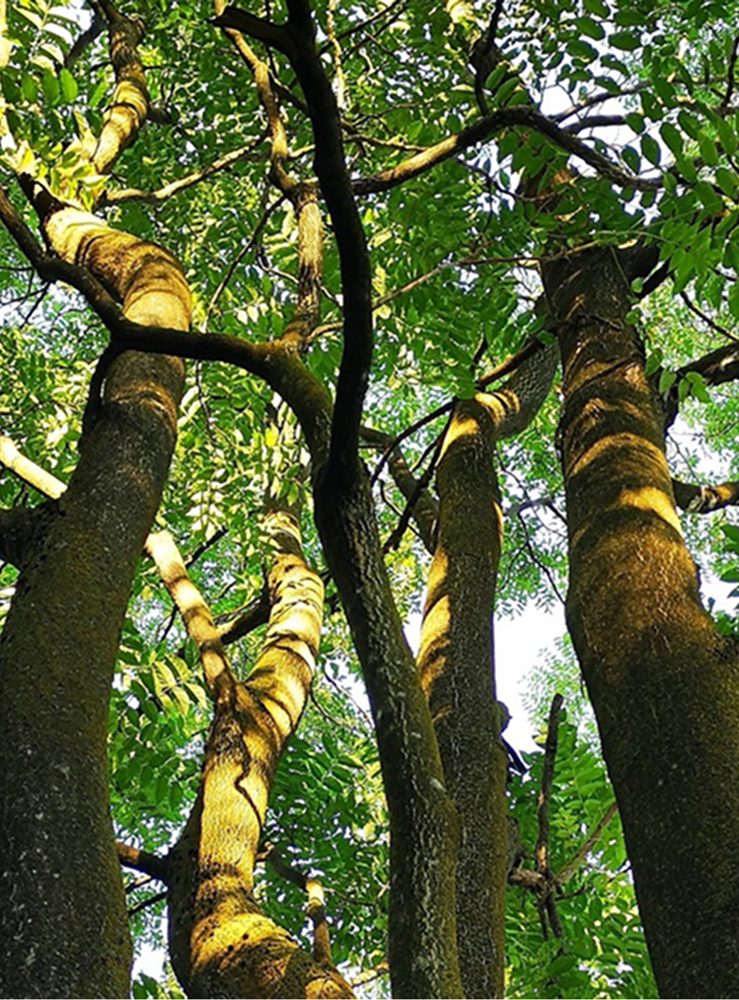

Il CONFLITTO BOTANICO
Le piante competono per la sopravvivenza in modi sofisticati, che spesso ricordano vere guerre:
- Specie neofite: Piante introdotte in nuovi ecosistemi che si diffondono rapidamente.
- Conseguenze: Perdita di biodiversità, squilibrio ecologico, conflitti tra specie autoctone e invasive.
- Esempi: Ambrosia, Fallopia japonica.
LA VISIONE DI STEFANO MANCUSO
Secondo Stefano Mancuso, le piante sono esseri intelligenti che reagiscono ai cambiamenti ambientali:
- Sensibilizzare sull’impatto delle specie invasive.
- Promuovere strategie ecologiche per la gestione degli ecosistemi.